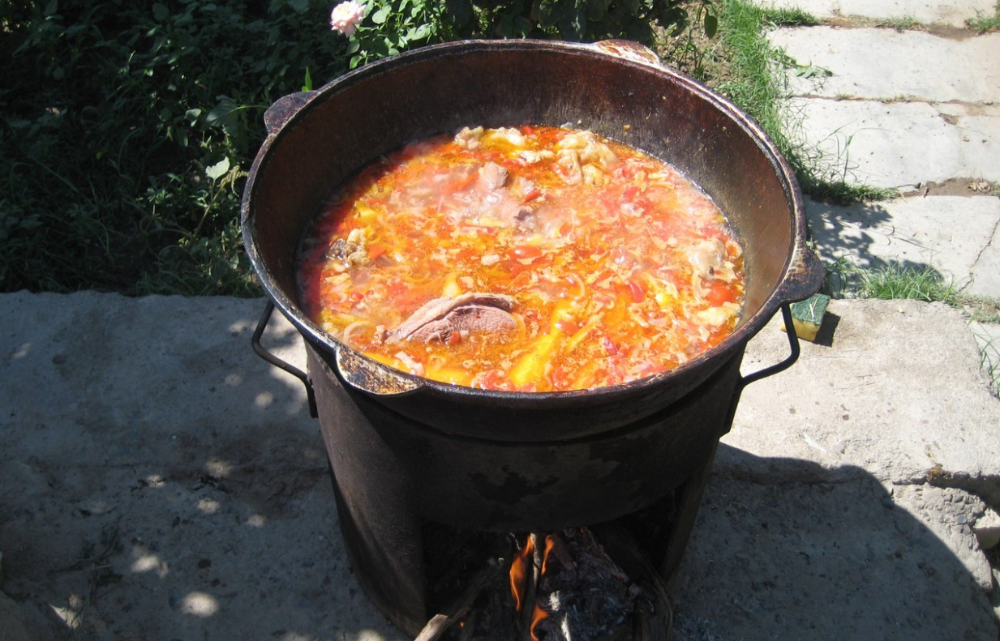
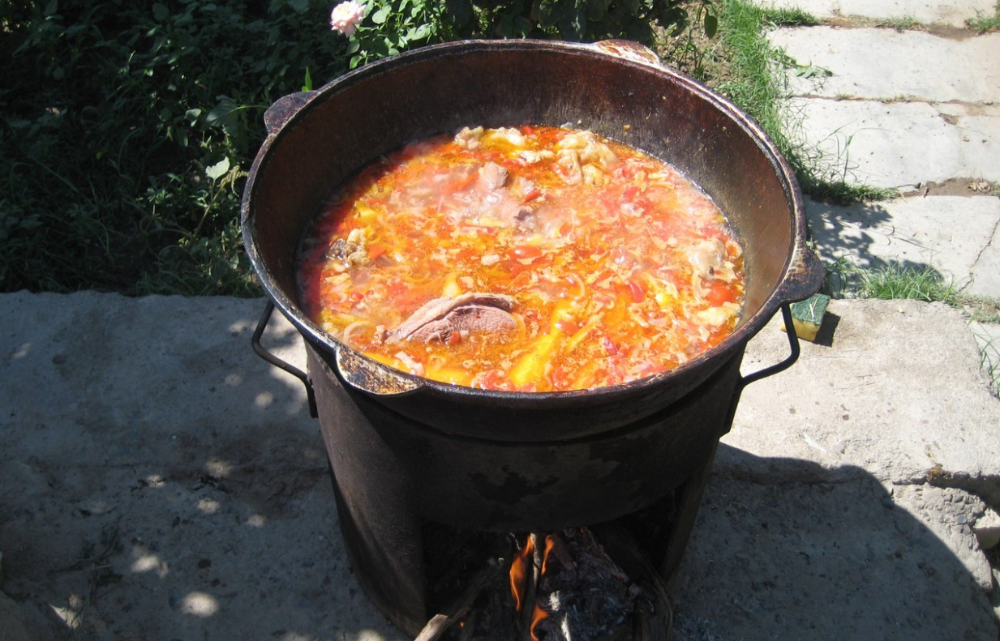

Turkmenistan cuisine reflects in its people that has a blend of its nomadic past,
ethnic Turkmen majority, and Uzbek, Russian and Tajik minorities.
Turkmen cuisine is piled high with meat, rice, sour milk products, cereals, vegetables, cheeses and butter made from camel's milk.
A distinctive feature of Turkmen cooking is preserving the original flavors of the ingredients and not covering them with intense herbs and spices.
A meat-lovers paradise, dishes include lamb, chicken, hares, deer, camel, a medium-sized game bird called ptarmigans, and other wild birds.
The consuption of horse meat is prohibited, as horsesare considered sacred animals since ancient times.(The Akhalteke, a breed famous for its stunning coat and metallic look is the national emblem of Turkmenistan.)
Turkmen cuisine is knownfor its hearty meat dishes, breads, and soups, as well asits sweet and spicy seasonings. The use of tea is also ubiguitous aspect of Turkmen culture, and it is often served as a sign of hospitality. Hospitality is a key aspectof Turkmen culture, and guests are treated with great respectand generosity. It is customary to offer a tea, sweets and other treats to guests, and to provide them with a comfortable place to stay.
The Butternut squash Gutap/Pumpkin Gutsap or simply Gutap is a sort of pastry, filled with vegetables, popular in Central Asia. You can find different variations mainly in Turkmenistan and Kazakhstan.
Dograma is a national Turkmen dish that is prepared from lamb, flatbread and onions. This dish is reserved for special occasions. The Name of the dish originates from the word "dogramak" wich means to cut to pieces and refers to making of dograma.
In Turkmenistan, a meat pie is called ishlekli or a shepherd's pie. Traditionally, ishlekli was baked by shepherds, who buried it in the hot sand of the Turkmen desert and coals.
Çorba is basically a heart wrming soup. In Turkmenistan they prepeare a lots of soup such as pumpkin soup (Kädi çorba), noodle soup (Makaron çorba) and yogurt soup with rice (Sütlaç). There is also Gowurdak, but that is more of a porridge than soup.
Symbolically, Chorek holds great significance in Turkmen culture. It is often gifted at weddings, births, and religious festivals, symbolizing prosperity, abundance, and goodwill. Sharing bread is a cherished ritual that fosters friendship and community, highlighting the importance of communication and solidarity.
Gutap is a lightweight filled pastry that can be done by using ingredients you definetly have at home.
Here is a video where you can learn how to make gutap:
Now I would recommend making this dish on special occasions, because It is compiled with a lots of different tastes.
Here is a video where you can learn how to make dograma:
This meat pie was made by sheaperds, they used to cook it in the hot desserts. But you are not a sheperd so you can cook it in the oven.
Here is a video where you can learn how to make işlekli:
You must try at least one of the soups I listed, they are flaverfull and easy to make.
Here is a video where you can learn how to make çorba:
CAPTION: THIS VIDEO IS IN TURKMEN LANGUAGE SO IF YOU DON'T UNDERSTAND IT FIND A ENGLISH VERSION!
I can tell you that this bread is addictive. After you make your first çorek you wil not stop having this as your main bread.
Here is a video where you can learn how to make çorek:
Çal aka Ayran, is the fermented camel's milk traditionally prepared by turkmen nomands. Çal in Turkmen, in Kazakhstanlmown as "Shubat".
Fermented camel milkflashing white with a sour flavour.
Çal is normally prepared by first souring camel milk in a skin bag or ceramic jar by adding previously sour milk.
For 3-4 days, fresh milk is mixed in, and the matured Çal will consist of one-third to one-fifth of previously soured milk.
Camel milk will not sour up to 72 hours at temperatures below 10°C.
At 30°C the milk sours approximatly 8 hours.
Fitçi Turkmen meat pies are a beloved traditional dish, featuring a savory filling of minced lamb or beef, finely chopped onions, and a blend of aromatic spices.
The mixture is enveloped in a dough made from flour, water, and a touch of oil, creating a perfect balance between a golden, crispy exterior and a rich, juicy interior.
Baked to perfection, these meat pies offer a delightful contrast in textures and flavors, making them a satisfying and hearty treat.
Often served hot, Fitçi pies are a staple in Turkmen cuisine, enjoyed as both a hearty snack and a main course.
They reflect the culinary heritage of the region, with each bite offering a taste of traditional flavors and techniques.
The simplicity of the ingredients, combined with the skillful preparation, results in a dish that is both comforting and delicious.
Whether enjoyed at a family gathering or as street food, Fitçi meat pies are a testament to the rich cultural tapestry of Turkmenistan.
 
